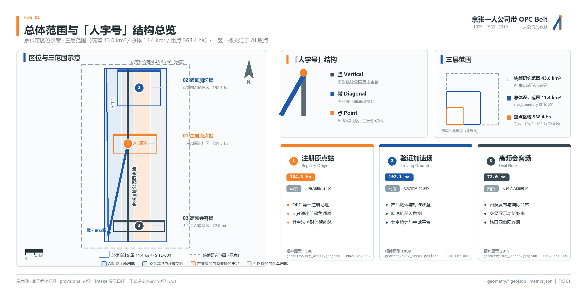
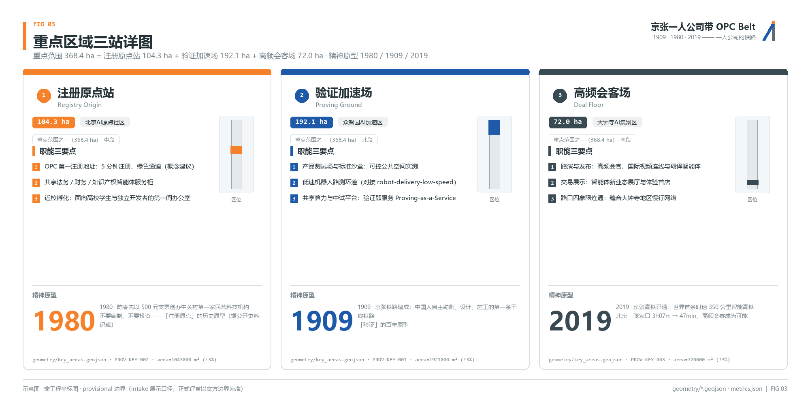
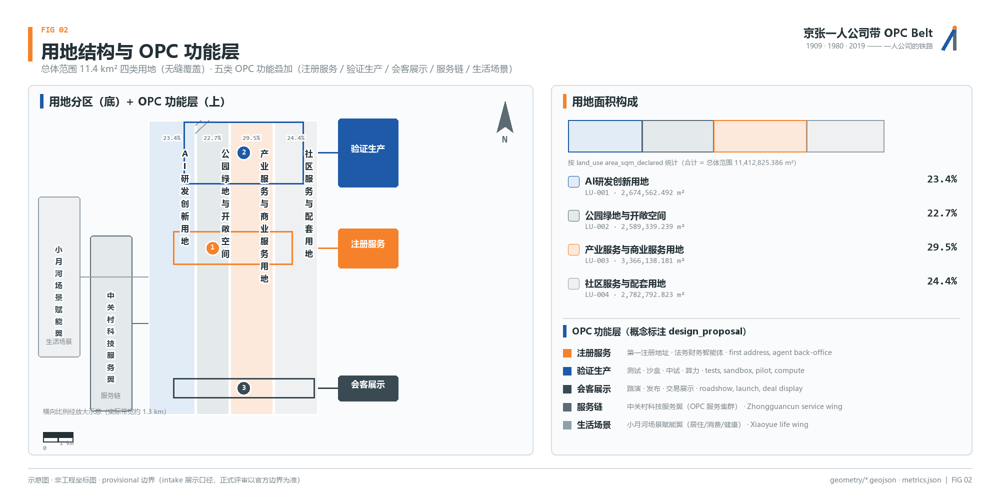
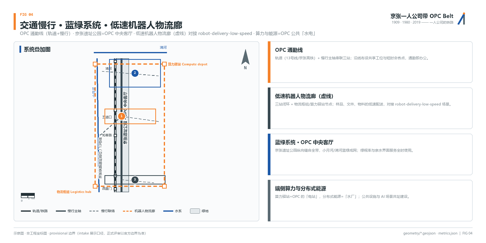
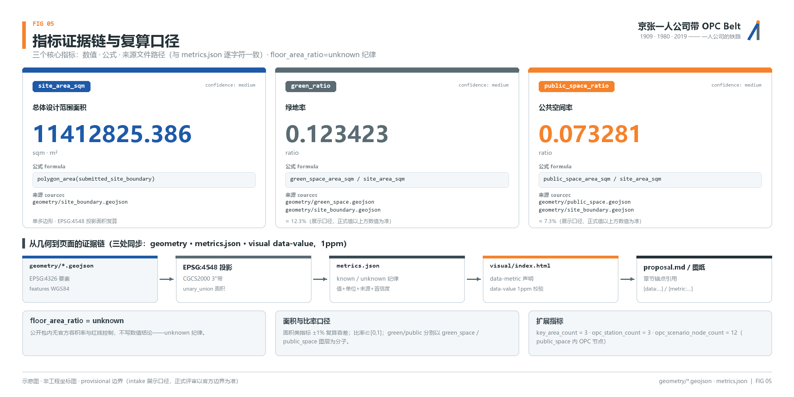

总览地图
京张带区位示意、三层范围与「人字号」构图形轴：一竖（京张遗址公园历史轴）一撇（创业线）交汇于 AI 原点社区；三站沿带串联。

三层范围
统筹研究 → 总体设计 → 重点区域逐级聚焦：生态链研究、控规深度城市设计与三站详细设计分别绑定图层与指标。
统筹研究范围 · 43.6 km²
OPC 生态链「高校策源—开源协作—一人公司—公共体验—国际传播」研究与叙事层。
- 全球 2 亿灵活就业 / 1.25 亿个体户 / 2.49 亿生成式 AI 用户作需求底盘
- 「1+N」公司模型：一个人 + N 个智能体员工
- Altman 一人十亿美元公司预言（注明预测性质）作时代命题
总体设计范围 · 11.4 km²
三站 + 两翼空间落位，城市更新与控规深度城市设计。
- 四类用地无缝覆盖（见「用地分区」）
- site_boundary SITE-001（provisional，正式评审以官方边界为准）
- 两翼：中关村科技服务翼 / 小月河场景赋能翼
重点区域范围 · 368.4 ha
三站详细设计（104.3 + 192.1 + 72.0 ha）。
- 注册原点站（北京AI原点社区）
- 验证加速场（众智园AI加速区）
- 高频会客场（大钟寺AI集聚区）
重点区域
三站详图：每站含面积、职能三要点与精神原型年份（1980 / 1909 / 2019）。概念建议措辞，供专业团队深化。

02 注册原点站 Registry Origin
北京AI原点社区 · 104.3 ha精神原型：陈春先服务部- OPC 第一注册地址：5 分钟注册绿色通道（概念建议）
- 共享法务 / 财务 / 知识产权智能体服务柜
- 近校孵化：面向学生与独立开发者的第一间办公室
01 验证加速场 Proving Ground
众智园AI加速区 · 192.1 ha原型：京张自主勘测设计施工- 产品测试场与标准沙盒：可控公共空间实测
- 低速机器人路测环道（robot-delivery-low-speed）
- 共享算力与中试平台：验证即服务
03 高频会客场 Deal Floor
大钟寺AI集聚区 · 72.0 ha原型：47 分钟同城圈- 路演与发布：高频会客、国际连线与翻译智能体
- 交易展示：智能体新业态展厅与体验首店
- 路口四象限连通：缝合慢行网络
用地分区
四类用地无缝覆盖总体范围（land_use LU-001…004，agent_generated_design），叠加五类 OPC 功能层概念标注（design_proposal）。

| 编码 | 用地类别 | 面积 area_sqm_declared | OPC 功能层（概念） |
|---|---|---|---|
| LU-001 | AI研发创新用地 | 2,674,562.492 m² | 验证生产（众智园锚点） |
| LU-002 | 公园绿地与开敞空间 | 2,589,339.239 m² | OPC 中央客厅 / 生活场景 |
| LU-003 | 产业服务与商业服务用地 | 3,366,138.181 m² | 会客展示 + 服务链 |
| LU-004 | 社区服务与配套用地 | 2,782,792.823 m² | 生活场景（小月河翼） |
交通慢行
OPC 通勤线（轨道+慢行主轴）串联三站；低速机器人物流廊（虚线）闭环布设，对接 robot-delivery-low-speed 场景。

蓝绿公共空间
京张遗址公园=OPC 中央客厅；小月河 / 清河蓝绿成网。三处朝圣地标均为「概念建议 / 供专业团队深化」，非既成事实。
① 第一号注册处 No.1 Registry
AI 原点社区。致敬 1980 中关村服务部：一面可生长铭牌墙，刻着每年第一号新注册 OPC 的名字——机制设计而非既成事实。
② 人字观景台 REN Deck
遗址公园内以人字形折返线为意象的观景构筑，可俯瞰带全景；折返线系詹天佑因地制宜的创造性运用（非发明）。
③ 百万行代码墙 Code Wall
大钟寺片区展示带内开源贡献的公共艺术装置；数据接入为运营前提，当前为概念建议。
建筑
拆改留方法论义务保留：无官方依据不结论。OPC 空间供给以轻改造、可逆植入为原则，提供五类标准空间产品。
| 空间产品 | 选址偏好 | 服务对象 | 规模特征 |
|---|---|---|---|
| 注册驿站 | 原点站近校界面 | 准 OPC、高校学生 | 柜台+卡座，轻改造 |
| 协作舱 | 三站轨道站点周边 | 1-3 人小团队 | 可逆装配式舱体 |
| 验证场 | 众智园测试环道 | 硬件/具身智能团队 | 标准沙盒+中试 |
| 发布厅 | 大钟寺四象限 | 路演、发布会 | 压力测试级扩声网络 |
| 算力驿站 | 物流廊节点共址 | 全带 OPC | 端侧算力+能源仓 |
buildings.geojson 现状 footprint 合计 310,807.184 m²（agent_generated_design，置信度 medium）。容积率、高度、密度、退线、红线等控制指标在公开包内无官方依据，保持 unknown，不写数值结论。
更新项目
六项 OPC 更新项目（JZ-01…06）；分期 P1 原点站试点 → P2 三站成线 → P3 两翼成网。100 天为征集期，非实施期。
| 编号 | 项目 | 主要内容 | 分期 |
|---|---|---|---|
| JZ-01 | 人字轴慢行缝合 | 沿遗址公园历史轴贯通慢行主轴，修补断点 | P2 |
| JZ-02 | 原点站注册大厅改造 | 既有建筑轻改造为注册驿站+服务柜集群 | P1 |
| JZ-03 | 众智园验证场 | 标准沙盒、低速机器人路测环道与共享算力 | P2 |
| JZ-04 | 大钟寺发布厅与四象限连通 | 发布厅改造 + 路口四象限慢行连通 | P2 |
| JZ-05 | 算力驿站网络 | 物流廊节点共址布设端侧算力与能源仓 | P3 |
| JZ-06 | 人字开发者大会路线 | 三站联动的年度开发者大会活动线路 | P3 |
AI 场景
12 张场景卡以「一个 OPC 创始人的一天」串联（SC-01…12，与 public_space 图层 opc_node 落点一致）；每卡说明空间载体、服务对象与隐私边界。
产业测试验证场景（3）
低速机器人物流线
众智园闭环路测：样品、文件、物料低速配送，运营数据反哺标准沙盒。
智能体办公沙盒
原点社区可控空间内测试法务/财务智能体服务流，人工复核节点强制保留。
发布厅压力测试
大钟寺发布厅高并发直播与多语翻译智能体实测，限公共数据。
全球案例研究（6）——口径逐条标注
| 案例 | 事实要点 | 口径 |
|---|---|---|
| Pieter Levels（levelsio） | 0 员工 0 融资；2024-09 自报月收入纪录 $420,000/月 | 创始人自报（未审计） |
| Tony Dinh / TypingMind | 上线头 7 天 $22K；20 个月累计 $100 万（2024-11 通讯） | 创始人自报（未审计） |
| Carrd / AJ | 约 $100K MRR、260 万用户（约 2022 访谈） | 创始人口径，匿名 |
| HeadshotPro / D. Postma | 单人 AI 证件照产品，官网自报累计收入超 $1,000 万 | 公司自我披露 |
| Aaron Sneed | 15 个 AI agent 组成 "Council"，每周省约 20 小时（2026-02 报道） | 媒体报道 |
| EVE / V. Rogovsky | 1 名人类 CTO + 20 个 AI agent，年省薪 $25 万+（2026-03） | 媒体报道 |
Sam Altman「一人十亿美元公司」为访谈中的预言（2024-02 公开），本方案按预测性质引用。用户画像 6 类：独立开发者、AI 研究员、设计师创作者、专业服务者、科技转业者、高校学生。
核心指标
三个核心指标与 metrics.json 逐字符一致（geometry ↔ metrics ↔ visual 三处同步，1ppm）。扩展计数指标：key_area_count=3、opc_scenario_node_count=12；更新项目 6 项（§10 表格计数，非 metrics 条目）。

任务覆盖
compliance_matrix.json 覆盖公告 17 条 + agent.1-6 全部 23 项任务；agent 任务与正文章节一一挂接。
| 任务 | 任务名称 | 对应正文章节 |
|---|---|---|
| agent.1 | 一带总体概念与功能统筹方案设计 | 三层范围工作框架 / 统筹研究范围产业与未来城市研究 / 总体设计范围城市更新与控规深度城市设计 / 重点区域详细设计 |
| agent.2 | AI全栈自主创新体系与世界级AI创新生态设计 | AI 创新生态、人才画像与 AI+ 场景（案例 6 + 画像 6 类） |
| agent.3 | AI+场景赋能新范式与智能化AI活力城市设计 | AI 创新生态（12 场景卡）/ 交通、轨道、市政与公共服务设施 |
| agent.4 | AI公共空间、智能原生新业态与朝圣地标设计 | 蓝绿空间、公共空间与城市风貌（三朝圣地标） |
| agent.5 | 百年京张文化、中关村文化与AI新文化融合叙事设计 | 设计依据与资料清单 / 蓝绿空间（1909·1980·2019 叙事线） |
| agent.6 | 一带全球AI创新活动体系与长期运营设计 | 更新项目清单、实施政策与分期计划（JZ-06 大会路线） |
公告条款 1.3.1-1.3.3（生态体系/城市形态/高品质城区）、1.4.1-1.4.3（三层范围）、1.5.1-1.5.3（分范围深度要求与三片区）同表全覆盖，详见 compliance_matrix.json。
自检状态
四门闸全部通过方可标记 self-checked；本页为 visual 门（门3）的载体，自身执行静态离线禁令。
来源
全部来源登记于 sources.json；案例数字保留「创始人自报 / 公司自我披露 / 媒体报道」口径标注；原始 URL 见 proposal.md 参考资料。
官方与任务书
- OFFICIAL-ANNOUNCEMENT · 竞赛公告（三层范围与 23 项任务）
- AGENT-TASKBOOK · agent.1-6 任务书
- SITE-PACKAGE / BOUNDARY-SOURCE / KEY-AREA-SOURCE · 场地包与边界（provisional 口径）
案例与史实登记
- OPC-CASE-LEVELS / OPC-CASE-TONY-DINH / OPC-CASE-CARRD / OPC-CASE-HEADSHOTPRO / OPC-CASE-SNEED / OPC-CASE-EVE · 六案例（自报口径）
- OPC-HIST-JINGZHANG / OPC-HIST-ZGC-1980 / OPC-HIST-JZHSR-2019 · 京张铁路、中关村服务部、京张高铁史实
- OPC-STAT-FLEXIBLE-EMP / OPC-STAT-CNNIC / OPC-STAT-SELF-EMPLOYED · 灵活就业 2 亿、生成式 AI 用户 2.49 亿、个体户 1.25 亿（权威统计）
假设
assumptions.json 共五条；全部待定项在正文解释对设计结论的影响。
- A-OPC-001 · provisional 边界：site_boundary 为 provisional_constraint（official_boundary=false），intake 展示口径；正式评分前以官方边界替换并重算全部面积指标。
- A-OPC-002 · 案例自报口径：六案例收入与规模数字为创始人自报或公司自我披露（未审计），仅作趋势证据，不作财务承诺；且均为海外案例，无中国本土 OPC 密度直接实证。
- A-OPC-003 · 机制非事实：三朝圣地标、注册绿色通道、铭牌墙、代码墙等均为机制设计与概念建议，供主办方与专业团队深化，非政府决定或既成事实。
- A-OPC-004 · 场景节点落点与面积口径：public_space 新增 12 个 Point 场景节点仅作示意与计数，不参与面积复算；重点区面积公告口径 104.3/192.1/72.0 ha，几何复算 104.32/192.92/72.05 ha（±3% 容差内），官方 polygon 发布后统一复算。
- A-CONTROLS-001 · 控制指标待定：容积率/高度/密度/退线/红线在公开包内无官方依据，全部保持 unknown；拆改留不结论。